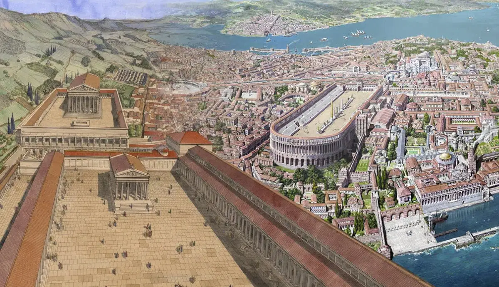

The Roman Theory
A strong civilization is not built in a single generation. It begins with a strong foundation. This rule applies to everything: architecture,
education, government, and even the way parents raise children. If the foundation is weak, the system eventually collapses — even if it
looks successful from the outside.
Consider the buildings and roads of the Roman Empire. Many ancient Roman structures still stand today after thousands of years. Meanwhile,
some modern buildings and roads begin to break after only a few decades. Why? Roman engineers built for the future, not only for immediate
profit. If modern societies focused more on durability than speed and money, cities would probably become safer and stronger.
The same problem exists in education. Many students today have access to unlimited information and advanced technology, but not all of
them develop critical thinking. If education only teaches students to pass exams, society may create skilled workers but not independent
thinkers. On the other hand, if schools taught philosophy, debate, and analysis more seriously, young people might become more responsible citizens.
Another important question concerns the success of societies. Why do some countries use technology and education successfully while others
remain poor and unstable? Some people believe success depends mainly on laws and reforms. Others argue that success comes from national
character: discipline, responsibility, and attitudes toward work.
If strong laws alone had guaranteed success, every modern country would already be prosperous. However, history proves otherwise. After World
War II, Japan rebuilt itself through discipline, education, and social reform. If Japan had depended only on natural resources, it might
never have become one of the strongest economies in the world.
Family life also shapes society. If children grow up without discipline or emotional stability, they may struggle as adults. Many parents
now give children entertainment instead of responsibility. If future generations continue avoiding difficulty, society could become
technologically advanced but psychologically weak.
If ancient societies had ignored long-term thinking, many of their achievements would have disappeared centuries ago. And if modern
societies continue valuing comfort more than responsibility, future generations may inherit technology without wisdom.
So what truly creates a successful civilization: laws, education, national character, or strong families?